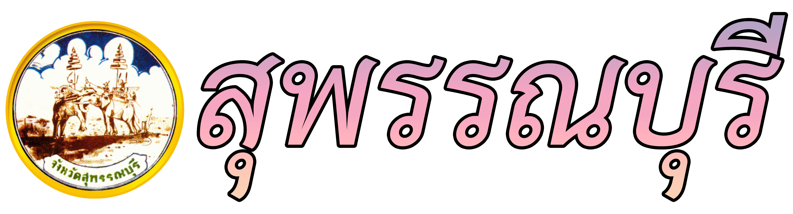
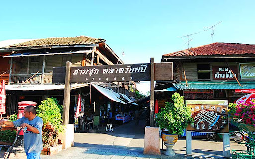
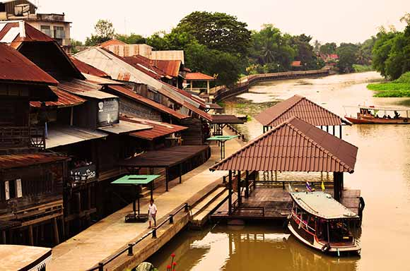

สถานที่ท่องเที่ยวของอำเภอสามชุก

ตลาดสามชุก
ตลาดเก่าแก่ได้รับการประกาศให้เป็นตลาด 100 ปี ในเชิงอนุรักษ์ เป็นตลาดสำคัญในการติดต่อค้าขายแลกเปลี่ยนสินค้าที่สำคัญในอดีต
เสน่ห์ของการเยี่ยมชมตลาดสามชุก คือการได้เดินชมความคลาสิคและความเก่าแก่ของ บ้านไม้อายุนับร้อยปี
แต่แบบห้องแถวซึ่งมีทั้งชั้นเดียวและสองชั้น รวมทั้งรับประทานอาหารอร่อยๆซึ่งมีให้ชิมตลอดทาง ตลาดสามชุก
จะมีซอยเล็กเริ่มตั้งแต่สามชุกซอย 1 – ซอย 4 ซึ่งแต่ละซอยก็จะอยู่ติดกันใช้ โดยในแต่ละซอยก็จะมีร้านค้าที่น่าสนใจแตกต่างกัน
ตำแหน่งที่ตั้ง

Ricker’s Cafe
คาเฟ่สไตล์ชิคๆ ที่อยู่ไม่ไกลจากตลาดสามชุกร้อยปี ตกแต่งสไตล์ Loft แบบดิบเท่ด้วยผนังอิฐและปูนเปือย
บรรยากาศร่มรื่นไปด้วยไม้ประดับต่างๆ ให้ความรู้สึกสบายเหมือนนั่งเล่นที่บ้านเพื่อน ให้บริการทั้ง อาหาร ขนม กาแฟ และเครื่องดื่มต่าง ๆ
โทร.098 271 9933
เปิดให้บริการทุกวัน เวลา 8:30 – 21:30 น.
ตำแหน่งที่ตั้ง

เรือนไทยสาคร สามชุก
ถ้าหากมีโอกาสได้มาเที่ยว สามชุกตลาดร้อยปี มีกิจกรรมหนึ่งที่น่าสนใจ คือการนั่งเรือเอี่ยมจุ้น (เป็นเรือที่ใช้เดินทางในสมัยโบราณ นั่งได้ราว 40 คน)
ล่องชมบรรยากาศ และวิถีชีวิตสองฝั่งแม่น้ำท่าจีน ที่ครั้งหนึ่งเคยเป็นเส้นทางเดินเรือที่สำคัญ และคึกคัก ระหว่างสุพรรณกับกรุงเทพ แต่ในปัจจุบัน
คนหันมาใช้เส้นทางรถยนต์ ที่รวดเร็วและสะดวกสบายกว่า ทำให้การเดินทางทางเรือ กลายเป็นเพียงภาพอดีต ที่ค่อยๆสูญหายไป บ้านเรือนรุ่นหลังๆ
ก็ปลูกหันหลังให้แม่น้ำกันหมด คงเหลือไว้เพียงบ้านเรือนที่มีอายุเก่าแก่ ที่ยังคงหลงเหลืออยู่บ้าง ริมสายน้ำที่เต็มไปด้วยเรื่องราวของวันเวลา ที่จะจางหาย
หรือ กลับมามีชีวิตเช่นอดีต
ตำแหน่งที่ตั้ง